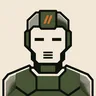
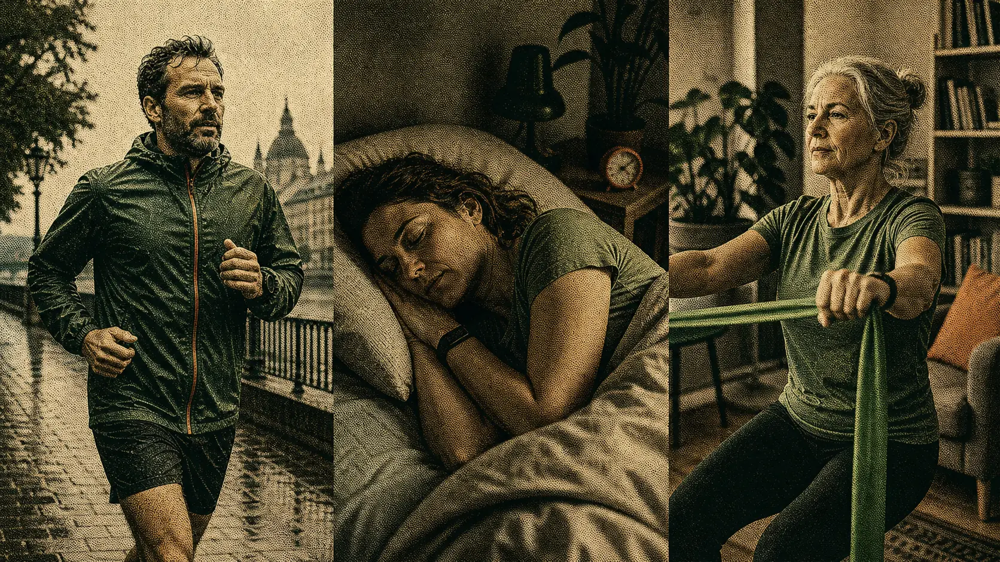

Fitness held steady through a disrupted week.
Your easy pace stayed near baseline despite two short nights. The missed interval session looks like sensible restraint, not lost momentum.
A health coach that runs on your own computer. It reads your Apple Health data alongside your goals, training plan, injuries and journal, then talks to you in Telegram.

zdrowskit TelegramIllustrative examples, not output from a real person’s account.
Numbers alone cannot tell a short night from a hard week. The coach reads your health data next to what you planned, what you wrote down, and what it already knows about you, so a dip looks like what it is.

Metrics, workouts, routes, sleep and long-term baselines.
Training schedule, goals, diet and recovery targets.
Travel, illness, workload, motivation and ordinary life.
Previous weeks, accepted changes and coaching history.
The coach writes SQL against your own database, so questions are not limited to a fixed set of dashboard cards. Ask about a pace, a trend, or a correlation you suspect, and it goes and looks.
If a chart makes the answer clearer, it renders one into the same thread. Reply to a report, update your goals mid-chat, ask a follow-up.
What a week looks likeHow’s my HRV trending since January?
Up and to the right. The monthly average has climbed steadily since January, with the usual dip during your March illness.
LLM spend, measured over six weeks of real use on the default models. Over a year, on the same workload:
Nearer $4 if you mostly leave it alone, about $11 if you chat with it daily. How that breaks down →
Each person’s Apple Health history lives in a separate SQLite database on your own machine. There is no zdrowskit server, no account, and no signup.
Reports, nudges and answers send the relevant slice of your health data to whichever model provider you configure. If health data leaving your machine for an LLM API is a dealbreaker, this is not the tool for you.
Built for roughly 1–10 people who know each other. Profiles are added by hand-editing a TOML roster; whoever runs the host can read every hosted person’s database. Trust replaces the access controls a real multi-tenant service would need.
The fact-checker ended up on a budget model rather than a premium one: it caught bad claims that both expensive candidates missed, 86% of cases against 57%.
The leaderboard publishes every score, including the bad ones: what was tested, what passed, and what is still unreliable. Read the leaderboard →
Re-scored against {{EVAL_CASE_COUNT}} eval cases; last recorded {{EVAL_UPDATED}}.